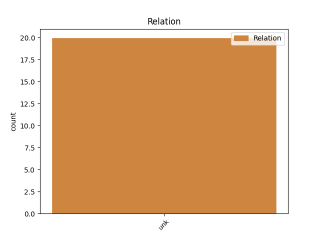
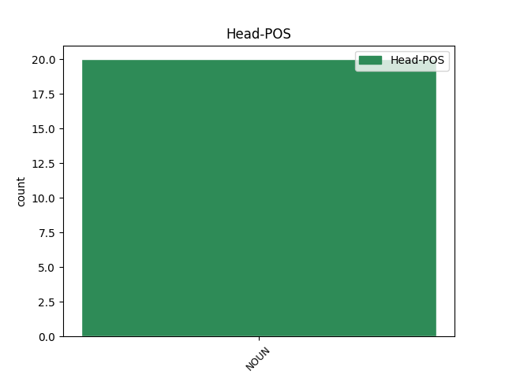
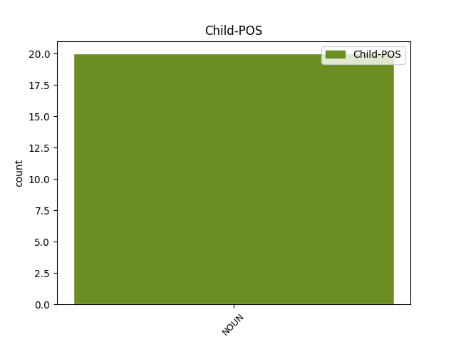

Distribution of features within this leaf



Agreement Rules sorted by frequency.
- When the dependent token is the unk(unk) of the head token, and the head token is NOUN and the dependent token is NOUN.
1 Odchylně _ _ _ _ 0 _ _ _
2 mohou _ _ _ _ 0 _ _ _
3 účetní _ _ _ _ 0 _ _ _
4 jednotky _ _ _ _ 0 _ _ _
5 oceňovat _ _ _ _ 0 _ _ _
6 zásoby _ _ _ _ 0 _ _ _
7 vlastní _ _ _ _ 0 _ _ _
8 výroby _ _ _ _ 0 _ _ _
9 , _ _ _ _ 0 _ _ _
10 jimiž _ _ _ _ 0 _ _ _
11 jsou _ _ _ _ 0 _ _ _
12 nedokončená _ _ _ _ 0 _ _ _
13 výroba _ _ _ _ 0 _ _ _
14 , _ _ _ _ 0 _ _ _
15 polotovary _ _ _ _ 0 _ _ _
16 a _ _ _ _ 0 _ _ _
17 výrobky _ _ _ _ 0 _ _ _
18 a) _ _ _ _ 0 _ _ _
19 ve _ _ _ _ 0 _ _ _
20 výrobě _ _ _ _ 0 _ _ _
21 s _ _ _ _ 0 _ _ _
22 krátkodobým _ _ _ _ 0 _ _ _
23 nepřetržitým _ _ _ _ 0 _ _ _
24 cyklem _ _ _ _ 0 _ _ _
25 nedokončenou _ _ _ _ 0 _ _ _
26 výrobu _ _ _ _ 0 _ _ _
27 pouze _ _ _ _ 0 _ _ _
28 přímými _ _ _ _ 0 _ _ _
29 materiálovými _ _ _ _ 0 _ _ _
30 náklady _ _ _ _ 0 _ _ _
31 a _ _ _ _ 0 _ _ _
32 výrobky _ _ _ _ 0 _ _ _
33 nebo _ _ _ _ 0 _ _ _
34 polotovary _ _ _ _ 0 _ _ _
35 přímými _ _ _ _ 0 _ _ _
36 materiálovými _ _ _ _ 0 _ _ _
37 a _ _ _ _ 0 _ _ _
38 mzdovými _ _ _ _ 0 _ _ _
39 náklady _ _ _ _ 0 _ _ _
40 , _ _ _ _ 0 _ _ _
41 b) _ _ _ _ 0 _ _ _
42 v _ _ _ _ 0 _ _ _
43 hromadné _ _ _ _ 0 _ _ _
44 a _ _ _ _ 0 _ _ _
45 velkosériové _ _ _ _ 0 _ _ _
46 výrobě _ _ _ _ 0 _ _ _
47 pouze _ _ _ _ 0 _ _ _
48 přímými _ _ _ _ 0 _ _ _
49 náklady _ _ _ _ 0 _ _ _
50 , _ _ _ _ 0 _ _ _
51 jimiž _ _ _ _ 0 _ _ _
52 jsou _ _ _ _ 0 _ _ _
53 náklady _ _ _ _ 0 _ _ _
54 na _ _ _ _ 0 _ _ _
55 přímý _ _ _ _ 0 _ _ _
56 materiál _ _ _ _ 0 _ _ _
57 , _ _ _ _ 0 _ _ _
58 polotovary _ _ _ _ 0 _ _ _
59 , _ _ _ _ 0 _ _ _
60 přímé _ _ _ _ 0 _ _ _
61 mzdy _ _ _ _ 0 _ _ _
62 a _ _ _ _ 0 _ _ _
63 ostatní _ _ _ _ 0 _ _ _
64 přímé _ _ _ _ 0 _ _ _
65 náklady _ _ _ _ 0 _ _ _
66 , _ _ _ _ 0 _ _ _
67 c) _ _ _ _ 0 _ _ _
68 v _ _ _ _ 0 _ _ _
69 malosériové _ _ _ _ 0 _ _ _
70 a _ _ _ _ 0 _ _ _
71 kusové _ _ _ _ 0 _ _ _
72 nebo _ _ _ _ 0 _ _ _
73 zakázkové _ _ _ _ 0 _ _ _
74 výrobě _ _ _ _ 0 _ _ _
75 a _ _ _ _ 0 _ _ _
76 ve _ _ _ _ 0 _ _ _
77 výrobě _ _ _ _ 0 _ _ _
78 s _ _ _ _ 0 _ _ _
79 dlouhodobým _ _ _ _ 0 _ _ _
80 cyklem _ _ _ _ 0 _ _ _
81 přímými _ _ _ _ 0 _ _ _
82 náklady náklad NOUN NNIP7-----A---- Animacy=Inan|Case=Ins|Gender=Masc|Number=Plur|Polarity=Pos 0 _ _ _
83 , _ _ _ _ 0 _ _ _
84 výrobní _ _ _ _ 0 _ _ _
85 režií režie NOUN NNFS7-----A---- Case=Ins|Gender=Fem|Number=Sing|Polarity=Pos 82 unk _ _
86 a _ _ _ _ 0 _ _ _
87 v _ _ _ _ 0 _ _ _
88 případě _ _ _ _ 0 _ _ _
89 , _ _ _ _ 0 _ _ _
90 že _ _ _ _ 0 _ _ _
91 výrobní _ _ _ _ 0 _ _ _
92 cyklus _ _ _ _ 0 _ _ _
93 přesahuje _ _ _ _ 0 _ _ _
94 dvanáct _ _ _ _ 0 _ _ _
95 měsíců _ _ _ _ 0 _ _ _
96 výjimečně _ _ _ _ 0 _ _ _
97 i _ _ _ _ 0 _ _ _
98 správní _ _ _ _ 0 _ _ _
99 režií _ _ _ _ 0 _ _ _
100 . _ _ _ _ 0 _ _ _
Disagree Examples:
1 (1) _ _ _ _ 0 _ _ _
2 Položka _ _ _ _ 0 _ _ _
3 " _ _ _ _ 0 _ _ _
4 B.I._Dlouhodobý_nehmotný_majetek _ _ _ _ 0 _ _ _
5 " _ _ _ _ 0 _ _ _
6 obsahuje _ _ _ _ 0 _ _ _
7 zejména _ _ _ _ 0 _ _ _
8 zřizovací _ _ _ _ 0 _ _ _
9 výdaje _ _ _ _ 0 _ _ _
10 , _ _ _ _ 0 _ _ _
11 nehmotné _ _ _ _ 0 _ _ _
12 výsledky _ _ _ _ 0 _ _ _
13 výzkumu _ _ _ _ 0 _ _ _
14 a _ _ _ _ 0 _ _ _
15 vývoje _ _ _ _ 0 _ _ _
16 , _ _ _ _ 0 _ _ _
17 software _ _ _ _ 0 _ _ _
18 , _ _ _ _ 0 _ _ _
19 ocenitelná _ _ _ _ 0 _ _ _
20 práva _ _ _ _ 0 _ _ _
21 a _ _ _ _ 0 _ _ _
22 goodwill _ _ _ _ 0 _ _ _
23 s _ _ _ _ 0 _ _ _
24 dobou _ _ _ _ 0 _ _ _
25 použitelnosti _ _ _ _ 0 _ _ _
26 delší _ _ _ _ 0 _ _ _
27 než _ _ _ _ 0 _ _ _
28 jeden _ _ _ _ 0 _ _ _
29 rok _ _ _ _ 0 _ _ _
30 a _ _ _ _ 0 _ _ _
31 od _ _ _ _ 0 _ _ _
32 výše _ _ _ _ 0 _ _ _
33 ocenění _ _ _ _ 0 _ _ _
34 určené _ _ _ _ 0 _ _ _
35 účetní _ _ _ _ 0 _ _ _
36 jednotkou _ _ _ _ 0 _ _ _
37 , _ _ _ _ 0 _ _ _
38 s _ _ _ _ 0 _ _ _
39 výjimkou _ _ _ _ 0 _ _ _
40 goodwillu _ _ _ _ 0 _ _ _
41 , _ _ _ _ 0 _ _ _
42 a _ _ _ _ 0 _ _ _
43 při _ _ _ _ 0 _ _ _
44 splnění _ _ _ _ 0 _ _ _
45 podmínek _ _ _ _ 0 _ _ _
46 dále _ _ _ _ 0 _ _ _
47 stanovených _ _ _ _ 0 _ _ _
48 a _ _ _ _ 0 _ _ _
49 při _ _ _ _ 0 _ _ _
50 splnění _ _ _ _ 0 _ _ _
51 povinností povinnost NOUN NNFP2-----A---- Case=Gen|Gender=Fem|Number=Plur|Polarity=Pos 0 _ _ _
52 stanovených _ _ _ _ 0 _ _ _
53 zákonem _ _ _ _ 0 _ _ _
54 , _ _ _ _ 0 _ _ _
55 zejména _ _ _ _ 0 _ _ _
56 respektováním respektování NOUN NNNS7-----A---- Case=Ins|Gender=Neut|Number=Sing|Polarity=Pos 51 unk _ _
57 principu _ _ _ _ 0 _ _ _
58 významnosti _ _ _ _ 0 _ _ _
59 a _ _ _ _ 0 _ _ _
60 věrného _ _ _ _ 0 _ _ _
61 a _ _ _ _ 0 _ _ _
62 poctivého _ _ _ _ 0 _ _ _
63 zobrazení _ _ _ _ 0 _ _ _
64 majetku _ _ _ _ 0 _ _ _
65 . _ _ _ _ 0 _ _ _
1 Zřizovacími _ _ _ _ 0 _ _ _
2 výdaji _ _ _ _ 0 _ _ _
3 nejsou _ _ _ _ 0 _ _ _
4 zejména _ _ _ _ 0 _ _ _
5 výdaje _ _ _ _ 0 _ _ _
6 na _ _ _ _ 0 _ _ _
7 pořízení _ _ _ _ 0 _ _ _
8 dlouhodobého _ _ _ _ 0 _ _ _
9 majetku _ _ _ _ 0 _ _ _
10 a _ _ _ _ 0 _ _ _
11 zásob _ _ _ _ 0 _ _ _
12 , _ _ _ _ 0 _ _ _
13 na _ _ _ _ 0 _ _ _
14 reprezentaci _ _ _ _ 0 _ _ _
15 nebo _ _ _ _ 0 _ _ _
16 výdaje _ _ _ _ 0 _ _ _
17 související _ _ _ _ 0 _ _ _
18 s _ _ _ _ 0 _ _ _
19 přeměnou _ _ _ _ 0 _ _ _
20 společnosti _ _ _ _ 0 _ _ _
21 nebo _ _ _ _ 0 _ _ _
22 družstva _ _ _ _ 0 _ _ _
23 , _ _ _ _ 0 _ _ _
24 b) _ _ _ _ 0 _ _ _
25 nehmotnými _ _ _ _ 0 _ _ _
26 výsledky výsledek NOUN NNIP7-----A---- Animacy=Inan|Case=Ins|Gender=Masc|Number=Plur|Polarity=Pos 0 _ _ _
27 výzkumu _ _ _ _ 0 _ _ _
28 a _ _ _ _ 0 _ _ _
29 vývoje _ _ _ _ 0 _ _ _
30 a _ _ _ _ 0 _ _ _
31 software _ _ _ _ 0 _ _ _
32 takové _ _ _ _ 0 _ _ _
33 výsledky výsledek NOUN NNIP1-----A---- Animacy=Inan|Case=Nom|Gender=Masc|Number=Plur|Polarity=Pos 26 unk _ _
34 a _ _ _ _ 0 _ _ _
35 software _ _ _ _ 0 _ _ _
36 , _ _ _ _ 0 _ _ _
37 které _ _ _ _ 0 _ _ _
38 jsou _ _ _ _ 0 _ _ _
39 buď _ _ _ _ 0 _ _ _
40 vytvořeny _ _ _ _ 0 _ _ _
41 vlastní _ _ _ _ 0 _ _ _
42 činností _ _ _ _ 0 _ _ _
43 k _ _ _ _ 0 _ _ _
44 obchodování _ _ _ _ 0 _ _ _
45 s _ _ _ _ 0 _ _ _
46 nimi _ _ _ _ 0 _ _ _
47 a _ _ _ _ 0 _ _ _
48 nebo _ _ _ _ 0 _ _ _
49 nabyty _ _ _ _ 0 _ _ _
50 od _ _ _ _ 0 _ _ _
51 jiných _ _ _ _ 0 _ _ _
52 osob _ _ _ _ 0 _ _ _
53 , _ _ _ _ 0 _ _ _
54 c) _ _ _ _ 0 _ _ _
55 ocenitelnými _ _ _ _ 0 _ _ _
56 právy _ _ _ _ 0 _ _ _
57 zejména _ _ _ _ 0 _ _ _
58 předměty _ _ _ _ 0 _ _ _
59 průmyslového _ _ _ _ 0 _ _ _
60 a _ _ _ _ 0 _ _ _
61 obdobného _ _ _ _ 0 _ _ _
62 vlastnictví _ _ _ _ 0 _ _ _
63 , _ _ _ _ 0 _ _ _
64 výsledky _ _ _ _ 0 _ _ _
65 duševní _ _ _ _ 0 _ _ _
66 tvůrčí _ _ _ _ 0 _ _ _
67 činnosti _ _ _ _ 0 _ _ _
68 a _ _ _ _ 0 _ _ _
69 práva _ _ _ _ 0 _ _ _
70 podle _ _ _ _ 0 _ _ _
71 zvláštních _ _ _ _ 0 _ _ _
72 právních _ _ _ _ 0 _ _ _
73 předpisů _ _ _ _ 0 _ _ _
74 za _ _ _ _ 0 _ _ _
75 podmínek _ _ _ _ 0 _ _ _
76 stanovených _ _ _ _ 0 _ _ _
77 v _ _ _ _ 0 _ _ _
78 písmenu _ _ _ _ 0 _ _ _
79 b) _ _ _ _ 0 _ _ _
80 , _ _ _ _ 0 _ _ _
81 d) _ _ _ _ 0 _ _ _
82 goodwillem _ _ _ _ 0 _ _ _
83 pro _ _ _ _ 0 _ _ _
84 účely _ _ _ _ 0 _ _ _
85 této _ _ _ _ 0 _ _ _
86 vyhlášky _ _ _ _ 0 _ _ _
87 kladný _ _ _ _ 0 _ _ _
88 nebo _ _ _ _ 0 _ _ _
89 záporný _ _ _ _ 0 _ _ _
90 rozdíl _ _ _ _ 0 _ _ _
91 mezi _ _ _ _ 0 _ _ _
92 oceněním _ _ _ _ 0 _ _ _
93 podniku _ _ _ _ 0 _ _ _
94 , _ _ _ _ 0 _ _ _
95 nebo _ _ _ _ 0 _ _ _
96 jeho _ _ _ _ 0 _ _ _
97 části _ _ _ _ 0 _ _ _
98 ve _ _ _ _ 0 _ _ _
99 smyslu _ _ _ _ 0 _ _ _
100 obchodního _ _ _ _ 0 _ _ _
101 zákoníku _ _ _ _ 0 _ _ _
102 , _ _ _ _ 0 _ _ _
103 nabytého _ _ _ _ 0 _ _ _
104 zejména _ _ _ _ 0 _ _ _
105 koupí _ _ _ _ 0 _ _ _
106 , _ _ _ _ 0 _ _ _
107 vkladem _ _ _ _ 0 _ _ _
108 nebo _ _ _ _ 0 _ _ _
109 oceněním _ _ _ _ 0 _ _ _
110 majetku _ _ _ _ 0 _ _ _
111 a _ _ _ _ 0 _ _ _
112 závazků _ _ _ _ 0 _ _ _
113 v _ _ _ _ 0 _ _ _
114 rámci _ _ _ _ 0 _ _ _
115 přeměn _ _ _ _ 0 _ _ _
116 společnosti _ _ _ _ 0 _ _ _
117 a _ _ _ _ 0 _ _ _
118 souhrnem _ _ _ _ 0 _ _ _
119 jeho _ _ _ _ 0 _ _ _
120 individuálně _ _ _ _ 0 _ _ _
121 přeceněných _ _ _ _ 0 _ _ _
122 složek _ _ _ _ 0 _ _ _
123 majetku _ _ _ _ 0 _ _ _
124 sníženým _ _ _ _ 0 _ _ _
125 o _ _ _ _ 0 _ _ _
126 převzaté _ _ _ _ 0 _ _ _
127 závazky _ _ _ _ 0 _ _ _
128 . _ _ _ _ 0 _ _ _
1 Zřizovacími _ _ _ _ 0 _ _ _
2 výdaji _ _ _ _ 0 _ _ _
3 nejsou _ _ _ _ 0 _ _ _
4 zejména _ _ _ _ 0 _ _ _
5 výdaje _ _ _ _ 0 _ _ _
6 na _ _ _ _ 0 _ _ _
7 pořízení _ _ _ _ 0 _ _ _
8 dlouhodobého _ _ _ _ 0 _ _ _
9 majetku _ _ _ _ 0 _ _ _
10 a _ _ _ _ 0 _ _ _
11 zásob _ _ _ _ 0 _ _ _
12 , _ _ _ _ 0 _ _ _
13 na _ _ _ _ 0 _ _ _
14 reprezentaci _ _ _ _ 0 _ _ _
15 nebo _ _ _ _ 0 _ _ _
16 výdaje _ _ _ _ 0 _ _ _
17 související _ _ _ _ 0 _ _ _
18 s _ _ _ _ 0 _ _ _
19 přeměnou _ _ _ _ 0 _ _ _
20 společnosti _ _ _ _ 0 _ _ _
21 nebo _ _ _ _ 0 _ _ _
22 družstva _ _ _ _ 0 _ _ _
23 , _ _ _ _ 0 _ _ _
24 b) _ _ _ _ 0 _ _ _
25 nehmotnými _ _ _ _ 0 _ _ _
26 výsledky _ _ _ _ 0 _ _ _
27 výzkumu _ _ _ _ 0 _ _ _
28 a _ _ _ _ 0 _ _ _
29 vývoje _ _ _ _ 0 _ _ _
30 a _ _ _ _ 0 _ _ _
31 software _ _ _ _ 0 _ _ _
32 takové _ _ _ _ 0 _ _ _
33 výsledky _ _ _ _ 0 _ _ _
34 a _ _ _ _ 0 _ _ _
35 software _ _ _ _ 0 _ _ _
36 , _ _ _ _ 0 _ _ _
37 které _ _ _ _ 0 _ _ _
38 jsou _ _ _ _ 0 _ _ _
39 buď _ _ _ _ 0 _ _ _
40 vytvořeny _ _ _ _ 0 _ _ _
41 vlastní _ _ _ _ 0 _ _ _
42 činností _ _ _ _ 0 _ _ _
43 k _ _ _ _ 0 _ _ _
44 obchodování _ _ _ _ 0 _ _ _
45 s _ _ _ _ 0 _ _ _
46 nimi _ _ _ _ 0 _ _ _
47 a _ _ _ _ 0 _ _ _
48 nebo _ _ _ _ 0 _ _ _
49 nabyty _ _ _ _ 0 _ _ _
50 od _ _ _ _ 0 _ _ _
51 jiných _ _ _ _ 0 _ _ _
52 osob _ _ _ _ 0 _ _ _
53 , _ _ _ _ 0 _ _ _
54 c) _ _ _ _ 0 _ _ _
55 ocenitelnými _ _ _ _ 0 _ _ _
56 právy _ _ _ _ 0 _ _ _
57 zejména _ _ _ _ 0 _ _ _
58 předměty _ _ _ _ 0 _ _ _
59 průmyslového _ _ _ _ 0 _ _ _
60 a _ _ _ _ 0 _ _ _
61 obdobného _ _ _ _ 0 _ _ _
62 vlastnictví _ _ _ _ 0 _ _ _
63 , _ _ _ _ 0 _ _ _
64 výsledky _ _ _ _ 0 _ _ _
65 duševní _ _ _ _ 0 _ _ _
66 tvůrčí _ _ _ _ 0 _ _ _
67 činnosti _ _ _ _ 0 _ _ _
68 a _ _ _ _ 0 _ _ _
69 práva _ _ _ _ 0 _ _ _
70 podle _ _ _ _ 0 _ _ _
71 zvláštních _ _ _ _ 0 _ _ _
72 právních _ _ _ _ 0 _ _ _
73 předpisů _ _ _ _ 0 _ _ _
74 za _ _ _ _ 0 _ _ _
75 podmínek _ _ _ _ 0 _ _ _
76 stanovených _ _ _ _ 0 _ _ _
77 v _ _ _ _ 0 _ _ _
78 písmenu _ _ _ _ 0 _ _ _
79 b) _ _ _ _ 0 _ _ _
80 , _ _ _ _ 0 _ _ _
81 d) _ _ _ _ 0 _ _ _
82 goodwillem goodwill NOUN NNIS7-----A---- Animacy=Inan|Case=Ins|Gender=Masc|Number=Sing|Polarity=Pos 0 _ _ _
83 pro _ _ _ _ 0 _ _ _
84 účely _ _ _ _ 0 _ _ _
85 této _ _ _ _ 0 _ _ _
86 vyhlášky _ _ _ _ 0 _ _ _
87 kladný _ _ _ _ 0 _ _ _
88 nebo _ _ _ _ 0 _ _ _
89 záporný _ _ _ _ 0 _ _ _
90 rozdíl rozdíl NOUN NNIS1-----A---- Animacy=Inan|Case=Nom|Gender=Masc|Number=Sing|Polarity=Pos 82 unk _ _
91 mezi _ _ _ _ 0 _ _ _
92 oceněním _ _ _ _ 0 _ _ _
93 podniku _ _ _ _ 0 _ _ _
94 , _ _ _ _ 0 _ _ _
95 nebo _ _ _ _ 0 _ _ _
96 jeho _ _ _ _ 0 _ _ _
97 části _ _ _ _ 0 _ _ _
98 ve _ _ _ _ 0 _ _ _
99 smyslu _ _ _ _ 0 _ _ _
100 obchodního _ _ _ _ 0 _ _ _
101 zákoníku _ _ _ _ 0 _ _ _
102 , _ _ _ _ 0 _ _ _
103 nabytého _ _ _ _ 0 _ _ _
104 zejména _ _ _ _ 0 _ _ _
105 koupí _ _ _ _ 0 _ _ _
106 , _ _ _ _ 0 _ _ _
107 vkladem _ _ _ _ 0 _ _ _
108 nebo _ _ _ _ 0 _ _ _
109 oceněním _ _ _ _ 0 _ _ _
110 majetku _ _ _ _ 0 _ _ _
111 a _ _ _ _ 0 _ _ _
112 závazků _ _ _ _ 0 _ _ _
113 v _ _ _ _ 0 _ _ _
114 rámci _ _ _ _ 0 _ _ _
115 přeměn _ _ _ _ 0 _ _ _
116 společnosti _ _ _ _ 0 _ _ _
117 a _ _ _ _ 0 _ _ _
118 souhrnem _ _ _ _ 0 _ _ _
119 jeho _ _ _ _ 0 _ _ _
120 individuálně _ _ _ _ 0 _ _ _
121 přeceněných _ _ _ _ 0 _ _ _
122 složek _ _ _ _ 0 _ _ _
123 majetku _ _ _ _ 0 _ _ _
124 sníženým _ _ _ _ 0 _ _ _
125 o _ _ _ _ 0 _ _ _
126 převzaté _ _ _ _ 0 _ _ _
127 závazky _ _ _ _ 0 _ _ _
128 . _ _ _ _ 0 _ _ _
1 O _ _ _ _ 0 _ _ _
2 případnou _ _ _ _ 0 _ _ _
3 následnou _ _ _ _ 0 _ _ _
4 změnu _ _ _ _ 0 _ _ _
5 kupní _ _ _ _ 0 _ _ _
6 ceny _ _ _ _ 0 _ _ _
7 podniku _ _ _ _ 0 _ _ _
8 nebo _ _ _ _ 0 _ _ _
9 jeho _ _ _ _ 0 _ _ _
10 části _ _ _ _ 0 _ _ _
11 se _ _ _ _ 0 _ _ _
12 upraví _ _ _ _ 0 _ _ _
13 hodnota _ _ _ _ 0 _ _ _
14 goodwillu _ _ _ _ 0 _ _ _
15 nebo _ _ _ _ 0 _ _ _
16 záporného _ _ _ _ 0 _ _ _
17 goodwillu _ _ _ _ 0 _ _ _
18 , _ _ _ _ 0 _ _ _
19 a _ _ _ _ 0 _ _ _
20 to _ _ _ _ 0 _ _ _
21 beze _ _ _ _ 0 _ _ _
22 změny _ _ _ _ 0 _ _ _
23 doby _ _ _ _ 0 _ _ _
24 odpisování _ _ _ _ 0 _ _ _
25 , _ _ _ _ 0 _ _ _
26 e) _ _ _ _ 0 _ _ _
27 povolenkami povolenka NOUN NNFP7-----A---- Case=Ins|Gender=Fem|Number=Plur|Polarity=Pos 0 _ _ _
28 na _ _ _ _ 0 _ _ _
29 emise _ _ _ _ 0 _ _ _
30 bez _ _ _ _ 0 _ _ _
31 ohledu _ _ _ _ 0 _ _ _
32 na _ _ _ _ 0 _ _ _
33 výši _ _ _ _ 0 _ _ _
34 ocenění _ _ _ _ 0 _ _ _
35 : _ _ _ _ 0 _ _ _
36 2 _ _ _ _ 0 _ _ _
37 . _ _ _ _ 0 _ _ _
38 jednotky jednotka NOUN NNFS2-----A---- Case=Gen|Gender=Fem|Number=Sing|Polarity=Pos 27 unk _ _
39 snížení _ _ _ _ 0 _ _ _
40 emisí _ _ _ _ 0 _ _ _
41 a _ _ _ _ 0 _ _ _
42 ověřeného _ _ _ _ 0 _ _ _
43 snížení _ _ _ _ 0 _ _ _
44 emisí _ _ _ _ 0 _ _ _
45 z _ _ _ _ 0 _ _ _
46 projektových _ _ _ _ 0 _ _ _
47 činností _ _ _ _ 0 _ _ _
48 , _ _ _ _ 0 _ _ _
49 1 _ _ _ _ 0 _ _ _
50 . _ _ _ _ 0 _ _ _
51 povolenky _ _ _ _ 0 _ _ _
52 na _ _ _ _ 0 _ _ _
53 emise _ _ _ _ 0 _ _ _
54 skleníkových _ _ _ _ 0 _ _ _
55 plynů _ _ _ _ 0 _ _ _
56 a _ _ _ _ 0 _ _ _
57 povolenky _ _ _ _ 0 _ _ _
58 na _ _ _ _ 0 _ _ _
59 emise _ _ _ _ 0 _ _ _
60 způsobené _ _ _ _ 0 _ _ _
61 letectvím _ _ _ _ 0 _ _ _
62 , _ _ _ _ 0 _ _ _
63 3 _ _ _ _ 0 _ _ _
64 . _ _ _ _ 0 _ _ _
65 jednotky _ _ _ _ 0 _ _ _
66 přiděleného _ _ _ _ 0 _ _ _
67 množství _ _ _ _ 0 _ _ _
68 , _ _ _ _ 0 _ _ _
69 f) _ _ _ _ 0 _ _ _
70 preferenčními _ _ _ _ 0 _ _ _
71 limity _ _ _ _ 0 _ _ _
72 zejména _ _ _ _ 0 _ _ _
73 individuální _ _ _ _ 0 _ _ _
74 referenční _ _ _ _ 0 _ _ _
75 množství _ _ _ _ 0 _ _ _
76 mléka _ _ _ _ 0 _ _ _
77 , _ _ _ _ 0 _ _ _
78 individuální _ _ _ _ 0 _ _ _
79 produkční _ _ _ _ 0 _ _ _
80 kvóty _ _ _ _ 0 _ _ _
81 a _ _ _ _ 0 _ _ _
82 individuální _ _ _ _ 0 _ _ _
83 limit _ _ _ _ 0 _ _ _
84 prémiových _ _ _ _ 0 _ _ _
85 práv _ _ _ _ 0 _ _ _
86 bez _ _ _ _ 0 _ _ _
87 ohledu _ _ _ _ 0 _ _ _
88 na _ _ _ _ 0 _ _ _
89 výši _ _ _ _ 0 _ _ _
90 ocenění _ _ _ _ 0 _ _ _
91 ; _ _ _ _ 0 _ _ _
92 u _ _ _ _ 0 _ _ _
93 prvního _ _ _ _ 0 _ _ _
94 držitele _ _ _ _ 0 _ _ _
95 pouze _ _ _ _ 0 _ _ _
96 v _ _ _ _ 0 _ _ _
97 případě _ _ _ _ 0 _ _ _
98 , _ _ _ _ 0 _ _ _
99 pokud _ _ _ _ 0 _ _ _
100 by _ _ _ _ 0 _ _ _
101 náklady _ _ _ _ 0 _ _ _
102 na _ _ _ _ 0 _ _ _
103 získání _ _ _ _ 0 _ _ _
104 informace _ _ _ _ 0 _ _ _
105 o _ _ _ _ 0 _ _ _
106 jejich _ _ _ _ 0 _ _ _
107 ocenění _ _ _ _ 0 _ _ _
108 reprodukční _ _ _ _ 0 _ _ _
109 pořizovací _ _ _ _ 0 _ _ _
110 cenou _ _ _ _ 0 _ _ _
111 nepřevýšily _ _ _ _ 0 _ _ _
112 její _ _ _ _ 0 _ _ _
113 významnost _ _ _ _ 0 _ _ _
114 . _ _ _ _ 0 _ _ _
1 O _ _ _ _ 0 _ _ _
2 případnou _ _ _ _ 0 _ _ _
3 následnou _ _ _ _ 0 _ _ _
4 změnu _ _ _ _ 0 _ _ _
5 kupní _ _ _ _ 0 _ _ _
6 ceny _ _ _ _ 0 _ _ _
7 podniku _ _ _ _ 0 _ _ _
8 nebo _ _ _ _ 0 _ _ _
9 jeho _ _ _ _ 0 _ _ _
10 části _ _ _ _ 0 _ _ _
11 se _ _ _ _ 0 _ _ _
12 upraví _ _ _ _ 0 _ _ _
13 hodnota _ _ _ _ 0 _ _ _
14 goodwillu _ _ _ _ 0 _ _ _
15 nebo _ _ _ _ 0 _ _ _
16 záporného _ _ _ _ 0 _ _ _
17 goodwillu _ _ _ _ 0 _ _ _
18 , _ _ _ _ 0 _ _ _
19 a _ _ _ _ 0 _ _ _
20 to _ _ _ _ 0 _ _ _
21 beze _ _ _ _ 0 _ _ _
22 změny _ _ _ _ 0 _ _ _
23 doby _ _ _ _ 0 _ _ _
24 odpisování _ _ _ _ 0 _ _ _
25 , _ _ _ _ 0 _ _ _
26 e) _ _ _ _ 0 _ _ _
27 povolenkami _ _ _ _ 0 _ _ _
28 na _ _ _ _ 0 _ _ _
29 emise _ _ _ _ 0 _ _ _
30 bez _ _ _ _ 0 _ _ _
31 ohledu _ _ _ _ 0 _ _ _
32 na _ _ _ _ 0 _ _ _
33 výši _ _ _ _ 0 _ _ _
34 ocenění _ _ _ _ 0 _ _ _
35 : _ _ _ _ 0 _ _ _
36 2 _ _ _ _ 0 _ _ _
37 . _ _ _ _ 0 _ _ _
38 jednotky _ _ _ _ 0 _ _ _
39 snížení _ _ _ _ 0 _ _ _
40 emisí _ _ _ _ 0 _ _ _
41 a _ _ _ _ 0 _ _ _
42 ověřeného _ _ _ _ 0 _ _ _
43 snížení _ _ _ _ 0 _ _ _
44 emisí _ _ _ _ 0 _ _ _
45 z _ _ _ _ 0 _ _ _
46 projektových _ _ _ _ 0 _ _ _
47 činností _ _ _ _ 0 _ _ _
48 , _ _ _ _ 0 _ _ _
49 1 _ _ _ _ 0 _ _ _
50 . _ _ _ _ 0 _ _ _
51 povolenky _ _ _ _ 0 _ _ _
52 na _ _ _ _ 0 _ _ _
53 emise _ _ _ _ 0 _ _ _
54 skleníkových _ _ _ _ 0 _ _ _
55 plynů _ _ _ _ 0 _ _ _
56 a _ _ _ _ 0 _ _ _
57 povolenky _ _ _ _ 0 _ _ _
58 na _ _ _ _ 0 _ _ _
59 emise _ _ _ _ 0 _ _ _
60 způsobené _ _ _ _ 0 _ _ _
61 letectvím _ _ _ _ 0 _ _ _
62 , _ _ _ _ 0 _ _ _
63 3 _ _ _ _ 0 _ _ _
64 . _ _ _ _ 0 _ _ _
65 jednotky _ _ _ _ 0 _ _ _
66 přiděleného _ _ _ _ 0 _ _ _
67 množství _ _ _ _ 0 _ _ _
68 , _ _ _ _ 0 _ _ _
69 f) _ _ _ _ 0 _ _ _
70 preferenčními _ _ _ _ 0 _ _ _
71 limity limit NOUN NNIP7-----A---- Animacy=Inan|Case=Ins|Gender=Masc|Number=Plur|Polarity=Pos 0 _ _ _
72 zejména _ _ _ _ 0 _ _ _
73 individuální _ _ _ _ 0 _ _ _
74 referenční _ _ _ _ 0 _ _ _
75 množství množství NOUN NNNS4-----A---- Case=Acc|Gender=Neut|Number=Sing|Polarity=Pos 71 unk _ _
76 mléka _ _ _ _ 0 _ _ _
77 , _ _ _ _ 0 _ _ _
78 individuální _ _ _ _ 0 _ _ _
79 produkční _ _ _ _ 0 _ _ _
80 kvóty _ _ _ _ 0 _ _ _
81 a _ _ _ _ 0 _ _ _
82 individuální _ _ _ _ 0 _ _ _
83 limit _ _ _ _ 0 _ _ _
84 prémiových _ _ _ _ 0 _ _ _
85 práv _ _ _ _ 0 _ _ _
86 bez _ _ _ _ 0 _ _ _
87 ohledu _ _ _ _ 0 _ _ _
88 na _ _ _ _ 0 _ _ _
89 výši _ _ _ _ 0 _ _ _
90 ocenění _ _ _ _ 0 _ _ _
91 ; _ _ _ _ 0 _ _ _
92 u _ _ _ _ 0 _ _ _
93 prvního _ _ _ _ 0 _ _ _
94 držitele _ _ _ _ 0 _ _ _
95 pouze _ _ _ _ 0 _ _ _
96 v _ _ _ _ 0 _ _ _
97 případě _ _ _ _ 0 _ _ _
98 , _ _ _ _ 0 _ _ _
99 pokud _ _ _ _ 0 _ _ _
100 by _ _ _ _ 0 _ _ _
101 náklady _ _ _ _ 0 _ _ _
102 na _ _ _ _ 0 _ _ _
103 získání _ _ _ _ 0 _ _ _
104 informace _ _ _ _ 0 _ _ _
105 o _ _ _ _ 0 _ _ _
106 jejich _ _ _ _ 0 _ _ _
107 ocenění _ _ _ _ 0 _ _ _
108 reprodukční _ _ _ _ 0 _ _ _
109 pořizovací _ _ _ _ 0 _ _ _
110 cenou _ _ _ _ 0 _ _ _
111 nepřevýšily _ _ _ _ 0 _ _ _
112 její _ _ _ _ 0 _ _ _
113 významnost _ _ _ _ 0 _ _ _
114 . _ _ _ _ 0 _ _ _